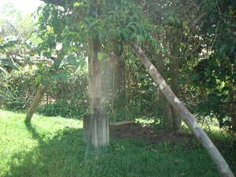

suley1 
/sulɔy/
n.
a brace
Awaa nu ka suley te sahing.
Remove the brace from the banana plant.
Eng. brace; support
Online dict status: -
Usage level: M
vt.
for someone (egsusuley, agent, eg><ø-rdpCV-) to brace a house or falling tree (egsulayen, patient, eg><en-) with a stick or board (igsuley, instrument, ig><ø-)
Eng. brace; support; buttress
Online dict status: -
Usage level: M
v.
for someone (egpannuley, impannuley/migpannuley, agent, eg><ø-paN-) to catch their chin with their open palm
Eng. chin in hand
Online dict status: -
Usage level: M
v.
(egpanuley_te_bakkè, eg><ø-paN-) to hold the chin in the hands
Egpanuley te bakkè ka etew ne due puruglima.
A person who has a problem holds his chin in his hands.
Eng. chin in hands; hold chin
Online dict status: -
Usage level: R
Updated by: RJH,QDL,RJH
Last updated: 14/Oct/2015
This page last updated: 28-Dec-2019
Copyright © 2009-2014, Matigsalug Language Christian Association, Inc